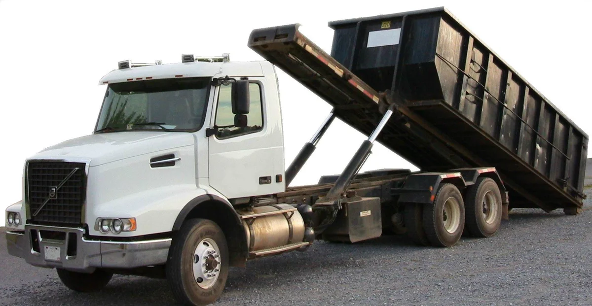

Home cleanouts
Make space for a move, a renovation, or the long-overdue garage cleanout.
The Woodlands, Texas
From a home cleanout to a construction project, start with a dumpster rental that fits the work ahead.

A place for the debris
Make space for a move, a renovation, or the long-overdue garage cleanout.
Discuss your project and the materials you need to dispose of before booking.
Plan a place for project debris as you work through the job.
Getting started
Good to know
Call or book online and tell us about your project, location, and timing.
Accepted materials and restrictions depend on the project. Ask about your specific debris before booking.
Pricing depends on the details of your rental. Contact us to discuss availability and a quote.
Call or book online to discuss your dumpster rental in The Woodlands.